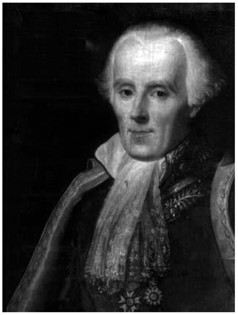
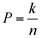
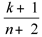
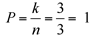
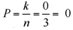

Pierre Simon Laplace: French (1749–1827)
In the early 1980s, the American neuroscientist Benjamin Libet (1916–2007) conducted a now-famous series of experiments questioning the existence of “free will.”1 In these experiments, participants were placed in front of a rapidly moving clock and instructed to carry out some small motor activity (such as flexing a finger or clenching a fist) whenever they felt like it, and note the position of the hand of the clock at the instant they were aware of the intention to act. The experiment showed that the decision to act occurs approximately 200 milliseconds prior to the movement. In addition, the researchers monitored the subjects’ brain activity during the whole experiment, using an electroencephalogram (EEG). Surprisingly, the EEG signal indicated brain activity related to the resulting movement more than 500 milliseconds in advance of the action, and, thus, more than 300 milliseconds before the subjects reported their first awareness of their desire to act. These findings seemed to suggest that whenever we make an apparently conscious decision to do something, we are actually just executing what our brain has already decided. Does this mean that free will is just an illusion? Is everything we do and everything we experience controlled by a subconscious program running in our brain, creating our consciousness and just making us believe that we are free to choose our actions? These questions are still not answered, and they are the subject of ongoing scientific debates. We have not yet understood how consciousness works, that is, how physiological processes such as ions flowing across nerve membranes cause us to have experiences. As long as this has not been clarified (and it is an extremely complex problem to solve), we cannot expect a definite answer to the question of existence or non-existence of conscious free will. It was already recognized by ancient Greek philosophers that free will is in conflict with the philosophical idea that all events are determined by previously existing causes, a philosophical theory known as determinism. If every event has a unique cause, then complete knowledge of the present state of the universe would, at least in principle, enable us to predict its future. But if the future is already determined by the present, then there is no room for free will. Although the concept of determinism goes back to philosophers in ancient Greece, the notion is nowadays strongly associated with Newtonian mechanics, which is the mathematical description of the motion of bodies under the influence of forces, based on Newton’s famous laws of motion. Newton’s three laws of motion were first published in 1687 in his opus magnum Philosophiæ Naturalis Principia Mathematica (Mathematical Principles of Natural Philosophy), commonly known as the Principia. They are fundamental laws of physics, describing the motion of colliding billiard balls just as well as the motion of planets in the solar system. Newtonian mechanics is deterministic in the sense that, if one knows the positions and velocities of all matter particles at some instant in time, one can, at least theoretically, calculate their future positions and velocities. Newton’s equations of motion provided the precise mathematical relationship between cause and effect, thereby establishing a solid scientific basis for the philosophical idea of determinism. The French mathematician Pierre Simon de Laplace (1749–1827) was among the first who recognized the philosophical implications of a mechanistic view of the universe. The following excerpt from his “Philosophical Essay on Probabilities,” published in 1814, is the first known articulation of scientific or causal determinism:
We may regard the present state of the universe as the effect of its past and the cause of its future. An intellect which at a certain moment would know all forces that set nature in motion, and all positions of all items of which nature is composed, if this intellect were also vast enough to submit these data to analysis, it would embrace in a single formula the movements of the greatest bodies of the universe and those of the tiniest atom; for such an intellect nothing would be uncertain and the future just like the past would be present before its eyes.2
This hypothetical intellect became later famously known as “Laplace’s demon,” although Laplace did not use the word “demon.” But Pierre Simon de Laplace is not only remembered as a pioneer of scientific determinism, he also made fundamental contributions to probability theory, statistics, and to the theory of differential equations. Most important, he introduced differential calculus into physics and astronomy, thereby substantially extending the work of Newton and other predecessors. His most important treatise, Traité de mécanique céleste (Treatise of Celestial Mechanics), was a seminal contribution to mathematical physics; it became a standard text in astronomy and remained state-of-the-art for more than one hundred years. We will examine a few of his scientific achievements in more detail as we provide a short of summary of his life.

Figure 25.1. Pierre Simon Laplace. (Painting by Jean-Baptiste Paulin Guérin, oil on canvas, 1838.)
Pierre Simon Laplace was born on March 23, 1749, in Beaumont-en-Auge, Normandy, France.3 His father, Pierre Laplace, was a cider merchant, and his mother, Marie-Anne Sochon, came from a relatively prosperous farming family. There is no evidence of higher academic education in his family. Pierre Simon attended the Benedictine priory school in Beaumont-en-Auge between the ages seven and sixteen. His father wanted him to become a priest, and so he sent him to the University of Caen to study theology. However, Laplace soon discovered that he was much more attracted to mathematics than to theology. This shift of interests was partly provoked by two inspiring mathematics teachers at Caen, Christophe Gadbled and Pierre Le Canu. Fortunately, they realized Laplace’s talent for mathematics and began to mentor him. While still a student at Caen, Laplace wrote his first mathematical paper and sent it to the renowned Italian mathematician Joseph-Louis Lagrange (1736–1813), who would later publish it in his journal, Miscellanea Taurinensia. Laplace was now determined to become a professional mathematician, and Le Canu wrote a letter of introduction for him to Jean-Baptiste le Rond d’Alembert (1717–1783), one of the leading mathematicians in Paris. Without taking his degree, Laplace traveled to Paris to introduce himself to d’Alembert. Descendants of d’Alembert reported that he was initially very reserved when he received Laplace in Paris.4 To get rid of him, he handed him a thick book of advanced mathematics, and told him to come back after he had read it. Not expecting to see Laplace again in the near future, d’Alembert was perplexed when Laplace knocked on his door only a few days later. He didn’t believe that Laplace had read the whole book, let alone that he had understood it. Visibly annoyed, he started to ask him mathematical questions, and soon had to acknowledge that Laplace had indeed understood everything contained in the book. His initially reluctant attitude disintegrated, and the more problems d’Alembert posed to Laplace, the more impressed he became with Laplace’s mathematical brilliance. He welcomed Laplace as his student and found a position for him as a mathematics professor at the École Militaire, a military academy in Paris. Financially secure and with not too many teaching obligations, Laplace delved into research and soon produced substantial mathematical results. After having published several high-quality papers, he applied for a position at the Academy of Sciences in Paris, the most distinguished scientific institution in France at that time. However, still in his early twenties, he was passed over in favor of older, but less prolific, mathematicians. Laplace, who was never modest about his achievements, became very angry about the decision he felt was unjust. Yet he didn’t have to wait too long. In 1773, after two unsuccessful attempts, he became an adjunct member of the Academy of Sciences (and was promoted to a senior position in 1785). With an uninterrupted flow of important contributions to mathematics during the 1770s, Laplace’s reputation as a mathematician steadily increased. In those years, he focused his interests and developed both his style as a mathematician and his philosophical viewpoints. His main fields of research gradually took shape, namely, the application of differential calculus to the motion of astronomical objects and the theory of probability. Understanding and calculating the motion of the planets in the solar system had been a big mathematical challenge throughout the history of science.
In his 1687 publication Philosophiae Naturalis Principia Mathematica, Newton showed that Johannes Kepler’s laws for planetary motion follow from Newton’s own three fundamental laws of mechanics, combined with his law of universal gravitation. The latter stated that two massive bodies attract each other with a force directly proportional to the product of their masses and inversely proportional to the square of the distance between their centers. Kepler had found his laws for the motion of planets empirically, by carefully studying observational data, but Newton “proved Kepler’s laws” in deriving them from his fundamental laws of mechanics. This was a great success for Newton’s theory; however, to derive Kepler’s laws from his equations of motion, Newton had to consider a single planet orbiting around the sun; in astronomy, this is called the “two-body problem.” But as soon as three or more bodies are involved, the equations describing their motion become much more complicated. In fact, the “three-body problem” is already so complicated that it can only be solved in an approximate sense. The planets in our solar system do not exactly behave according to Kepler’s laws; the gravitational pull they exert on each other makes their orbits deviate slightly from perfect Kepler orbits. Even the smallest planet has a tiny effect on the motion of all other planets, and, over long periods of time, these tiny disturbances may accumulate to large deviations. Describing the whole solar system in the framework of Newtonian mechanics leads to an extremely complicated system of equations, since the gravitational force acting on a planet depends not only on its distance from the sun but also on the current positions of all other planets. Newton had recognized the mathematical difficulties in his attempts, and he doubted that this complex system of equations could be solved at all. His conclusion was that periodic divine intervention was necessary for the solar system to remain stable; otherwise, the small disturbances of a planet’s orbit caused by the presence of other planets could add up over time and finally kick the planet out of the solar system. Observational data gathered in the early eighteenth century indicated that Jupiter’s orbit was slowly shrinking, while Saturn’s orbit was expanding. Explaining this apparent instability was a big open problem of astronomy; even Leonhard Euler and Joseph-Louis Lagrange had unsuccessfully tried to solve it. Laplace carried out a more refined mathematical analysis of the problem, incorporating effects that Euler and Lagrange had omitted, and his calculations turned out to be in perfect agreement with the observational data. His analysis revealed that the special ratio between the orbital periods of Jupiter and Saturn is responsible for the anomalies in their motions. (Two periods of Saturn’s orbit around the sun are almost exactly equal to one period of Jupiter’s orbit.) Having solved this longstanding problem, Laplace aimed at a theoretical description of the whole solar system. His scientific goal was to: “bring theory to coincide so closely with observation that empirical equations should no longer find a place in astronomical tables.”5
In his major work, Celestial Mechanics, published in five volumes between 1799 and 1825, Laplace brought the methods of calculus into classical mechanics, which previously had mainly been studied geometrically. The powerful machinery of calculus enabled Laplace to tackle problems Newton and other predecessors had considered too complicated for a mathematical analysis. Laplace developed a complete mathematical framework for calculating the motions of the planets and their satellites, including the tidal motion and the effects of tidal forces on the shape of planets. In particular, he was able to show stability of the solar system6 without having to postulate any divine intervention, as Newton did. There is a famous anecdote regarding a conversation between Laplace and Napoleon Bonaparte: When Laplace presented his work to Napoleon, he was congratulated but asked why he had nowhere mentioned God in his book. Laplace’s blunt and now-famous answer was: “I had no need of that hypothesis.”7
Because Laplace was rather opportunistic with his political opinions, he escaped imprisonment during the French Revolution and was even appointed as minister of the interior by Napoleon, as a placeholder for Napoleon’s brother. That is probably the main reason why Laplace’s political career lasted only six weeks; however, Napoleon later wrote in his memoirs:
Laplace did not consider any question from the right angle: he sought subtleties everywhere, conceived only problems, and finally carried the spirit of “infinitesimals” into the administration.8
In 1812, Laplace published his Théorie analytique des probabilités (Analytic Theory of Probability). The mathematical theory of probability has its origin in a correspondence between Blaise Pascal (1623–1662) and Pierre de Fermat (1607–1665). However, it was Laplace who developed a complete mathematical theory around the exemplary problems discussed by his predecessors. His views on the subject are best expressed in the following quote:
The theory of probabilities is at bottom nothing but common sense reduced to calculus; it enables us to appreciate with exactness that which accurate minds feel with a sort of instinct for which of times they are unable to account.9
Laplace’s book on probability theory was one of the most influential books in mathematics. He laid the foundation of the subject and formulated its basic principles, in addition to establishing a theoretical framework. He considered not only many practical applications, such as mortality, life expectancy, the length of marriages, but also triangulation methods in surveying, and other problems of geodesy, the science of measuring and understanding Earth’s geometric shape and its gravitational field. Among the many results he proved, we shall just mention one of the mathematical concepts that bear his name today: Laplace’s rule of succession. This rule can be seen as follows: Assume you are conducting an experiment that can result in only a success or a failure, and you repeat it independently n times. If you get k successes, what would be your estimate for the probability that the outcome of the next trial will be a success? A reasonable, and quite natural, answer would be

, but Laplace showed that in some situations, the ratio
gives a better estimate. For a large n, the difference between the two ratios is negligible, but if n is small, Laplace’s formula is more useful, as the following example illustrates:If you toss a coin three times and it always comes up heads (which we here will consider success), then the formula

would suggest that the probability for the coin to show heads after the next toss is 100 percent, which is, of course, nonsense. Similarly, if the coin always came up tails in the first three trials, the formula
would suggest that the probability for the coin to come up heads in the next toss is zero. Laplace’s formula avoids these wrong conclusions by leaving room for the possibility that the fourth toss might produce a different result.In his later years, Laplace tried to extend his mathematical methods to other areas of physics. He developed a theory of light and a theory of heat (both of which proved to be wrong), and he continued to publish papers well into his seventies. Laplace died in Paris in 1827, but his name is still very present in mathematics and physics thanks to the mathematical objects and notions carrying his name. In particular, we have the well-known Laplace’s equation, and the Laplace transform. (The Laplace equation is a differential equation that is important in several branches of physics; for example, the gravitational field of the Earth must satisfy Laplace’s equation everywhere outside the Earth. In higher mathematics, a simple definition for the Laplace transform would be that it takes a function of a real variable and transforms it into a function of a complex variable.) Last but not least, there is Laplace’s demon, who is still wandering around in philosophical discussions stimulated by new findings in neuroscience.